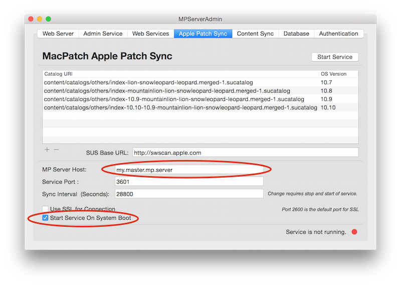

The Apple patch content sync is used to reference all of the Apple patch content. MacPatch will download the reference information for each Apple patch in the respective catalog. This does not download the Apple patch content to the MacPatch server.
It is recommended that you use your own Apple Software Update Server or Reposado (https://github.com/wdas/reposado) for content replication.
Configuration
- "MP Server Host" - This will most likely be your MacPatch Master Server
- "Start Service On System Boot"
As new Mac OS versions are released new Apple Software Update catalogs will need to be created.

To perform a sync of the Apple patch content outside of the standard sync interval run the following command in a terminal session.
% sudo -u _appserver /Library/MacPatch/Server/conf/scripts/MPSUSPatchSync.py --plist /Library/MacPatch/Server/conf/etc/gov.llnl.mp.patchloader.plist
Logging
The sync process is logged to the following file /Library/MacPatch/Server/Logs/MPSUSPatchSync.log